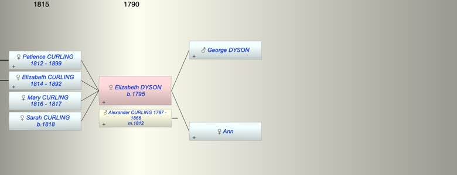

| [Index] |
| Elizabeth DYSON (1795 - ) |
|  |
| b. 1795 |
| m. 21 Jan 1812 Alexander CURLING (1787 - 1866) at St Botoloph |
| Parents: |
| George DYSON |
| Ann |
| Children (4): |
| Patience CURLING (1812 - 1899) |
| Elizabeth CURLING (1814 - 1892) |
| Mary Anne CURLING (1816 - 1817) |
| Sarah Ann CURLING (1818 - ) |
| Events in Elizabeth DYSON (1795 - )'s life | |||||
| Date | Age | Event | Place | Notes | Src |
| 1795 | Elizabeth DYSON was born | ?? | |||
| 21 Jan 1812 | 17 | Married Alexander CURLING (aged 24) | St Botoloph | Note 1 | |
| 03 Nov 1812 | 17 | Birth of daughter Patience CURLING | City of London | Note 2 | |
| 16 Sep 1814 | 19 | Birth of daughter Elizabeth CURLING | City of London | Note 3 | |
| 09 May 1816 | 21 | Birth of daughter Mary Anne CURLING | City of London | Note 4 | |
| 1817 | 22 | Death of daughter Mary Anne CURLING (aged 1) | City of London | Note 5 | |
| 16 Dec 1818 | 23 | Birth of daughter Sarah Ann CURLING | City of London | Note 6 | |
| 1866 | 71 | Death of husband Alexander CURLING (aged 79) | Denmark Hill, London | Note 7 | |
| 1892 | 97 | Death of daughter Elizabeth CURLING (aged 78) | |||
| 23 Apr 1899 | 104 | Death of daughter Patience CURLING (aged 86) | Streatham | Note 8 | |
| Created on a Mac™ using iFamily for Mac™ on 8 Oct 2023 |